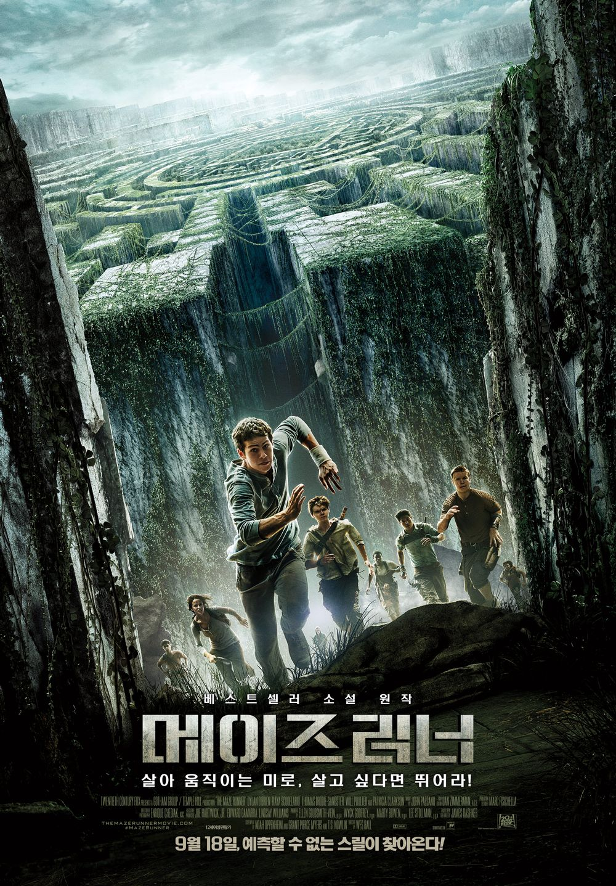
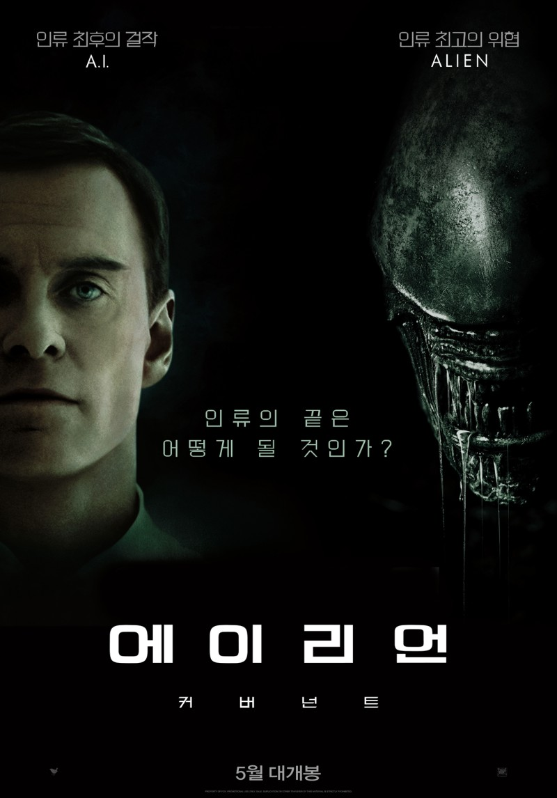

- 저를 소개합니다
- Name : 송승우
- Birth : 2001. 09. 19
- Age : 22세
- Address : 울산광역시 울주군
- Height : 171cm
- Phone : 010-9251-****
- Blood Type : B
- E-mail : sgg919@naver.com
- 송승우 일대기
- 온산초등학교 2014년 졸업
- 온산중학교 2017년 졸업
- 온산고등학교 2020년 졸업
- 경북대학교 과학기술대학 소프트웨어학과 재학
- MBTI
- 좋아하는 영화

ENFP
“재기발랄한 활동가 | 스파크형”
- 활동가형 사람은 자유로운 사고의 소유자입니다.
종종 분위기 메이커 역할을 하기도 하는 이들은 단순한 인생의 즐거움이나
그때그때 상황에서 주는 일시적인 만족이 아닌 타인과 사회적, 정서적으로
깊은 유대 관계를 맺음으로서 행복을 느낍니다.매력적이고 독립적인 성격으로
활발하면서 인정 많은 이들은 전체 인구 7%에 속하며, 어느 모임을 가든 어렵
지 않게 만날 수 있습니다. -

[메이즈러너]
영화 | MazeRunner | 2014
어느날 갑자기 자신의 이름을 제외한 모든 기억이 삭제된 채 의문의 장소로 보내진 소년 '토마스'는 미로에 갇힌 그곳에서 자신과 같은 처지에 놓인 다른 소년들을 만난다. 그들은 매일 밤 살아 움직이는 미로에서 정체를 알 수 없는 죽음의 존재와 대립하며, 이 지옥으로부터 빠져나갈 탈출구인 미로의 지도를 그려왔었다. 그러던 어느 날, 닫혀있어야 하는 미로의 문들이 열리고 그들은 마지막 선택의 기로에 놓이게 되는데…

[에일리언]
영화 | ALIEN: COVENANT | 2017
은하의 반대편에 존재하는 외딴 행성을 향해 출발한, 대부분이 커플로 이루어진 우주선 ’커버넌트’의 선원들은 새로운 파라다이스를 발견한다. 하지만 실제로 그곳은 어둡고 위험한 미지의 세계. 그곳에서 발견된 유일한 지성체는 바로 ‘합성 인조인간’ 데이빗. 엘리자베스 쇼 박사와 데이빗은 실패한 ‘프로메테우스’ 탐사에서 살아남은 유일한 생존자였는데…
[탑 건]
영화 | Top Gun: Maverick | 2022
최고의 파일럿이자 전설적인 인물 매버릭(톰 크루즈)은 자신이 졸업한 훈련학교 교관으로 발탁된다. 그의 명성을 모르던
팀원들은 매버릭의 지시를 무시하지만 실전을 방불케 하는 상공 훈련에서 눈으로 봐도 믿기 힘든 전설적인 조종 실력에 모두가
압도된다. 매버릭의 지휘 아래 견고한 팀워크를 쌓아가던 팀원들에게 국경을 뛰어넘는 위험한 임무가 주어지자 매버릭은 자신이
가르친 동료들과 함께 마지막이 될지 모를 하늘 위 비행에 나서는데…